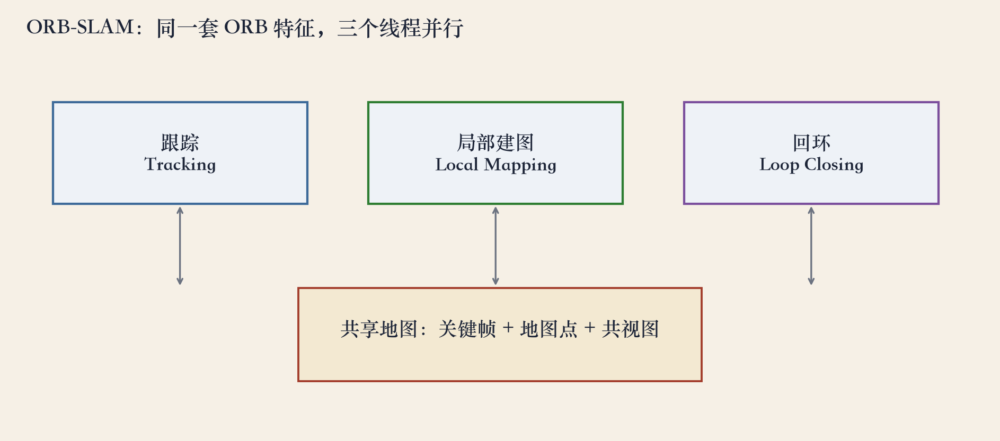
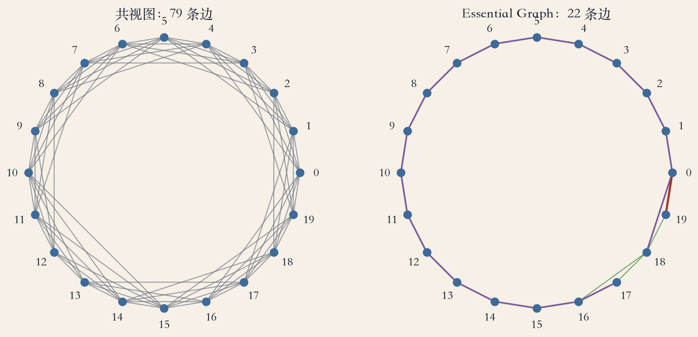
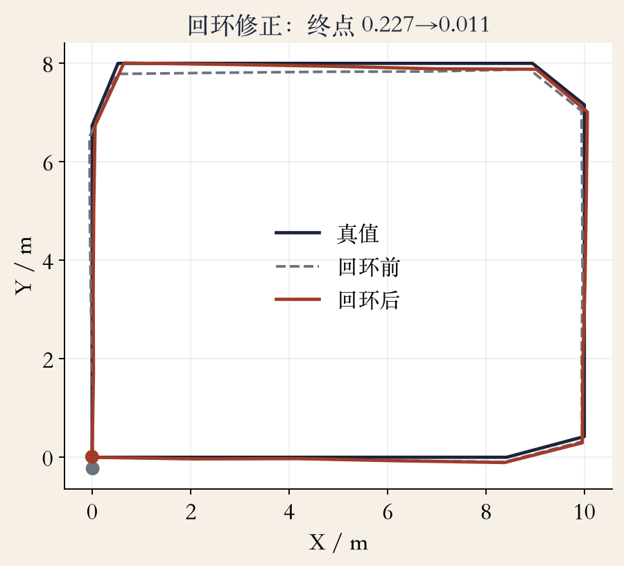

论文第 3 页 · 系统总览
ORB-SLAM：三条线程一起跑
跟踪：每帧定位相机，挑关键帧。
局部建图：处理关键帧，三角化新点。
回环：发现回到老地方，修全局轨迹。
三条线程共享一套 ORB 特征和一张地图。
依据：Mur-Artal et al. 2015, pp.3–5
三条流水线
跟踪（前台）
局部建图（后台）
回环（后台）
正课第一百零一集
01 / 12
论文第 4 页 · 跟踪线程
跟踪：每一帧先站稳
用上一帧做特征匹配。
只优化当前位姿，叫 motion-only BA。
跟踪丢了，用地点识别做全局重定位。
跟踪稳，后面的建图和回环才有数据。
依据：论文 p.4
跟踪线程
输入：当前帧
输出：当前位姿
失败：重定位
正课第一百零一集
02 / 12
图1 · 三线程共享地图
一张地图，三条线程各干一段
跟踪把新关键帧交给局部建图。
局部建图更新地图，交回跟踪和回环。
回环修正再作用到共享地图。
不是三套特征，是同一套 ORB 特征。
依据：程序生成示意，对照论文 pp.3–4

三线程（跟踪/局部建图/回环）共享一张地图｜程序生成，未用原书原图
正课第一百零一集
03 / 12
论文第 4 页 · 地图维护
地图：先敢插，再敢删
地图点和关键帧先宽松创建。
之后严格裁剪：删冗余帧、错匹配、跟踪不到的点。
插入太保守，探索容易跟丢。
插入太随意，地图会爆。
依据：论文 p.4
两步策略
宽松创建：探索时扩张
严格裁剪：维护时压规模
正课第一百零一集
04 / 12
论文第 4 页 · 回环
回环：用相似变换把漂移摊回去
检测到回环，先算一个相似变换。
对齐回路两侧，融合重复地图点。
在相似约束上做位姿图优化。
单目漂移含尺度，所以是七自由度。
依据：论文 p.4
回环三步
检测闭环
对齐 + 融合
位姿图优化
正课第一百零一集
05 / 12
论文第 4–5 页 · 图结构
共视图与 Essential Graph
共视图：两个关键帧共同看到 ≥15 个点，就连边。
边权是共同点的数量。
Essential Graph 只留生成树、强共视边、回环边。
高共视阈值是 100。
依据：论文 pp.4–5
两类图
共视图：谁和谁看得见同一批点
Essential Graph：保留强约束的稀疏骨架
正课第一百零一集
06 / 12
图2 · 图稀疏化实验
79 条边 → 22 条边，骨架不断
20 个关键帧，200 个地图点。
每个点被连续 6 帧看到。
共视图 79 条边，生成树 19 条，Essential Graph 22 条。
合成阈值取 50，论文里是 100。
依据：程序生成实验

共视图 79 条边 vs Essential Graph 22 条边（20 关键帧）｜程序生成，未用原书原图
正课第一百零一集
07 / 12
论文第 5 页 · 地点识别
回环先靠词袋找候选
DBoW2 把 ORB 描述子聚成视觉词。
在线查倒排索引，先找可能回到过的关键帧。
再做几何验证，确认是不是同一地点。
初始化要保守：视差足够才建第一张地图。
依据：论文 p.5
地点识别
词袋检索 → 候选
几何验证 → 确认
初始化：单应/基础矩阵并行
正课第一百零一集
08 / 12
图3 · 回环实验
回环把终点误差降约 21 倍
20 个位姿走矩形回路。
不加回环：终点误差 0.227 米，ATE 0.163 米。
加回环：终点误差 0.0108 米，ATE 0.107 米。
ATE 只降到三分之二：误差摊到整条轨迹。
依据：程序生成二维实验

二维位姿图回环：终点 0.227→0.0108 米，ATE 0.163→0.107 米｜程序生成，未用原书原图
正课第一百零一集
09 / 12
关键帧裁剪 · 合成演示
20 帧删到 15 帧，点仍全覆盖
每四个关键帧删一个，保留 15 个。
200 个地图点仍被至少一个保留帧看到。
冗余帧可以删，地图覆盖不一定掉。
真实系统还看点的质量、视角和跟踪需求。
依据：程序生成演示
裁剪的边界
删冗余帧：地图更轻
删唯一观测点：地图会断
真实规则不是固定每四帧删一
正课第一百零一集
10 / 12
论文第 5 页 · 局限
ORB-SLAM 不是万能
单目尺度不可观，长距离仍有尺度漂移。
纯旋转、弱纹理、快速运动、动态物体会失败。
回环认错，整张地图会被假边拧歪。
稀疏特征地图适合定位，不适合稠密避障。
依据：论文 pp.3–5；本集实验
适用边界
适合：定位、稀疏建图
不适合：稠密避障、精细 AR 遮挡
依赖：CPU 调度
正课第一百零一集
11 / 12
总结 · 下一集
三条线程，一张地图
跟踪、局部建图、回环共享 ORB 特征和地图。
共视图建边，Essential Graph 做稀疏骨架。
回环用相似变换处理单目尺度。
下一集：COLMAP 上机，跑多视图重建。
依据：本集回顾
带走三句话
三线程共享一套特征/地图
Essential Graph 保留强约束
回环用七自由度相似变换
正课第一百零一集
12 / 12